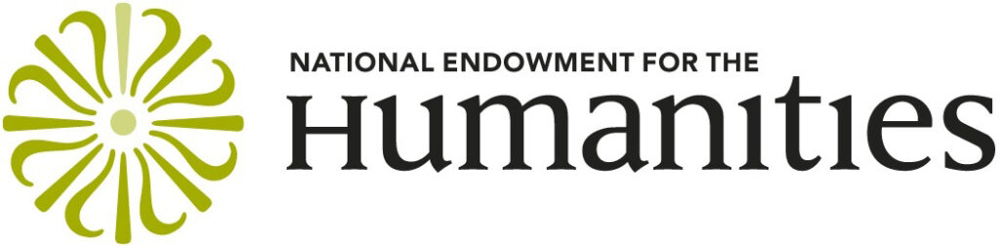

The Archives and Special Collections department of the University of California, San Francisco (UCSF) Library, in collaboration with the San Francisco Public Library (SFPL) and the Gay, Lesbian, Bisexual, Transgender (GLBT) Historical Society, has been awarded a $315,000 implementation grant from the National Endowment for the Humanities. The collaborating institutions will digitize about 127,000 pages from 49 archival collections related to the early days of the AIDS epidemic in the San Francisco Bay Area and make them widely accessible to the public online. In the process, collections whose components had been placed in different archives for various reasons will be digitally reunited, facilitating access for researchers outside the Bay Area.
The 24-month project, “The San Francisco Bay Area’s Response to the AIDS Epidemic: Digitizing, Reuniting, and Providing Universal Access to Historical AIDS Records” will commence on July 1, 2017. The 127,000 pages from the three archives range from handwritten correspondence and notebooks to typed reports and agency records to printed magazines. Also included are photographic prints, negatives, transparencies, and posters. The materials will be digitized by the University of California, Merced Library’s Digital Assets Unit, which has established a reputation for digitizing information resources so that they can be made available to the world via the web. All items selected for digitization will be carefully examined to address any privacy concerns. The digital files generated by this project will be disseminated broadly through the California Digital Library, with the objects freely accessible to the public through both Calisphere, operated by the University of California, and the Digital Public Library of America, which will have an AIDS history primary sources set.
“A digital repository of 127,000 pages from 49 collections from these three institutions not only allows the collections to ‘speak’ to one another in novel ways, but makes them accessible to a broad array of audiences. Within academia, historians of medicine and public health will be joined by sociologists and historians of gender, sexuality, and journalism, for starters. They will be eager to make such remarkable primary source materials available to undergraduate, graduate, and medical students alike. But such materials have a far wider potential audience,” said Scott H. Podolsky, M.D., Professor of Global Health and Social Medicine at Harvard Medical School and Director of the Center for the History of Medicine at the Francis A. Countway Library of Medicine.
Haipeng Li, University Librarian, University of California, Merced Library stated that “the UC Merced Library is very pleased to be partnering on this project, which builds upon our long-standing collaboration with UCSF Library to digitize rare and unique materials in the health sciences. Our students and researchers, especially those involved in UC Merced’s growing public health program, will benefit from wider access to the AIDS history materials and I am sure the experience and expertise of our staff will enable them to contribute significantly to the success of the project.”
The AIDS epidemic became one of the most significant public-health events of the late-twentieth century, continuing into the twenty-first. San Francisco was particularly hard hit by AIDS, in part because, by the early 1980s, it had become a welcoming place for gay men who moved from throughout the country and around the world to experience a flourishing community. This same diaspora also fueled, early on in the crisis, the development of unique community-based organizations (CBOs) to care for the sick and dying. At the same time, the AIDS crisis engendered unprecedented modes of political activism. Desperate people with HIV/AIDS and their allies hoping for a cure, held protests and sit-ins at medical conferences and became respected colleagues in the search for effective treatments while demanding early access to therapies, shaking up the staid world of medical research. Art and literature, too, most notably the AIDS Quilt, were created out of the grief and loss caused by the epidemic. Beginning in the mid-1980s, San Francisco witnessed the development of a highly effective collaborative network of city and state agencies, hospitals, health care providers, and CBOs that, through a goal of putting patients first, became known as the “San Francisco model” of compassionate AIDS care.
“The early years of the AIDS epidemic are just over the historical horizon for many who will themselves be forced to wrestle with issues of disease stigmatization and the blurred domains between medicine and society. These are our future patients, clinicians, politicians, and policymakers alike. It is thus important that such collections – documenting a central, if difficult, part of our nation’s history – be exposed to as wide a public as possible,” said Podolsky.
In the late 1980s, UCSF initiated, with the GLBT Historical Society and other Bay Area archives, the AIDS History Project, addressing the need to forge relationships between historians and the AIDS community to document and preserve the lessons and experience of the AIDS epidemic. Today UCSF, the GLBT Historical Society, and SFPL archivists have selected collections from each archive that will contribute to an understanding of the medical, social, and political processes that merged to develop effective means of treating those with AIDS, educate the public about HIV, create social support organizations for those who were often shunned by family, and advocate for a community that was dying at an alarming rate.
Terry Beswick, Executive Director of the GLBT Historical Society explained, “We were founded in 1985 in San Francisco, at a time when it was becoming increasingly apparent that AIDS was threatening the historical memory of the LGBTQ community. In fact, we lost many of our founders and supporters to AIDS – and many are living with HIV today. That’s why this project is especially important to us. AIDS and, more importantly, the San Francisco Bay Area’s response to the epidemic, have been both the catalyst for our formation and one of our main historical influences.”
“The San Francisco Public Library houses both the City and County of San Francisco city archives and the James C. Hormel Gay and Lesbian Center, the first research center for GLBT collections in a public library in the country. In its role as the repository of the city archives, the library receives collections from politicians, including mayors, as well as from city departments, many addressing policy decisions and the creation of the “San Francisco model” in response to the devastation of the AIDS epidemic,” said Luis Herrera, San Francisco City Librarian. “Not only will the proposed collaborative project allow greater access to primary source materials that are located only in San Francisco, but it will ensure that these items are digitally preserved for long lasting use. We also welcome the opportunity to “reunite” collections that were given to multiple institutions in separate donations over time or from different donors.”
“Rarely in the history of human societies has there been an opportunity to capture information in real time about a new disease that became a pandemic. The story is multi-focal: the medical response, the cultural response, the political response, and the caregiving response”, said Victoria A. Harden, Founding Director Emerita, Office of NIH History.
Providing online access to the digital archival collections will benefit a diverse group of users, including scholars in disciplines such as history, literature, medicine, jurisprudence, journalism, and sociology; college and university students in an equally broad range of fields; media outlets; and members of the general public.
“It is wonderful to think that a future researcher could, at the click of a button, shift quickly from Shilts’s book to his handwritten interview notes, to Selma Dritz’s slides about venereal disease, to the diary pages of Daniel Turner or Bobbi Campbell, or to the administrative records of the institutions involved – records which are currently geographically distant, despite having been tightly connected thematically in the past,” said Richard A. McKay, D.Phil., a Wellcome Trust Research Fellow in the Department of History and Philosophy of Science at the University of Cambridge.
The project team has established a five-member Advisory Board that will be available to consult with project team members as needed to asses and resolve issues related to sensitive materials in the collections. Members include:
- Barbara A. Koenig, PhD, RN, Professor of Medical Anthropology & Bioethics in the Department of Social & Behavioral Sciences, Institute for Health & Aging and Head of UCSF Bioethics Program
- Phoebe Evans Letocha, Collections Management Archivist at Alan Mason Chesney Medical Archives, Johns Hopkins Medical Institutions
- Jeffrey Reznick, PhD, chief, History of Medicine division at National Library of Medicine
- Paul Volberding, Professor of Medicine, UCSF; Director, AIDS Research Institute; Director, Global Health Sciences Research; Co-Director, UCSF-GIVI Center for AIDS Research
- Elizabeth Watkins, PhD, UCSF Dean of the Graduate Division, Vice Chancellor – Student Academic Affairs, and Professor in the Department of Anthropology, History, and Social Medicine
“UCSF and affiliated faculty and staff including those at Zuckerberg San Francisco General, played a leading role in responding to the horrendous HIV epidemic. The experiences of that response and the lessons learned that can help guide future challenges demand we collect and preserve documents from those early days.” said Paul Volberding, Director, AIDS Research Institute; Director, Global Health Sciences Research; Co-Director, UCSF-GIVI Center for AIDS Research. “We are thrilled that the UCSF Archives along with our partners at the SF Public Library and the GLBT Historical Society has received grant funding to support this process. We are certain that this archive will be a powerful research tool for historians as they help us better understand our contributions. The UCSF AIDS Research Institute is eager to do all we can to help this vital resource.”
At the conclusion of the project, public access to the materials will be launched in a variety of ways. The availability on Calisphere and Digital Public Library of America will be promoted online, and the content of the collection will be explored through exhibits and public programs at each of the collaborating institutions, including at UC Merced. Finally, to commemorate the thirtieth anniversary of the 1989 “AIDS and the Historian” conference, a national conference on the history of the response to the AIDS epidemic will be presented in San Francisco.
“NEH provides support for projects across America that preserve our heritage, promote scholarly discoveries, and make the best of America’s humanities ideas available to all Americans,” said NEH Chairman William D. Adams. “We are proud to announce this latest group of grantees who, through their projects and research, will bring valuable lessons of history and culture to Americans.”
About UCSF Archives and Special Collections (UCSF Library)
The mission of the UCSF Archives and Special Collections is to identify, collect, organize, interpret, and maintain rare and unique material to support research and teaching of the health sciences and medical humanities and to preserve institutional memory. The UCSF AIDS History Project (AHP) began in 1987 as a joint effort of historians, archivists, AIDS activists, health care providers, scientists, and others to secure historically significant resources documenting the response to the AIDS crisis, its holdings currently include 42 collections and they continue to grow. www.library.ucsf.edu
About the San Francisco History Center (San Francisco Public Library)
The San Francisco History Center holds a comprehensive, non-circulating research collection covering all aspects of San Francisco history from the time of the area’s earliest habitation to the present day. The material sheds light on many aspects of the City’s history: its geography and architecture; its politics and government; the lives of citizens, both prominent and ordinary; and the contributions of ethnic, cultural and social groups in creating the City’s vibrant character. The Center also holds the official archives of the City and County of San Francisco. www.sfpl.org
About the GLBT Historical Society
As an internationally recognized leader in the field of LGBTQ public history, the GLBT Historical Society collects, preserves and interprets the history of gay, lesbian, bisexual and transgender people and the communities that support them. Founded in 1985, the society maintains one of the world’s largest collections of LGBTQ historical materials at its archives and research center in San Francisco’s Mid-Market District, in addition to operating the GLBT History Museum in the Castro neighborhood since 2011. www.glbthistory.org
About UC Merced Library
The UC Merced Library opened its doors to the inaugural class of University of California, Merced students in August 2005. From the beginning, the library has been the hub of the campus and a center for innovation. As a center of expertise in the digitization, curation, publication, and preservation of information resources, the Digital Assets unit enables and assures long-term access to digital collections that support the research areas of the UC Merced intellectual community and beyond. library.ucmerced.edu

About the National Endowment for the Humanities
Created in 1965 as an independent federal agency, the National Endowment for the Humanities supports research and learning in history, literature, philosophy, and other areas of the humanities by funding selected, peer-reviewed proposals from around the nation. Additional information about the National Endowment for the Humanities and its grant programs is available at: www.neh.gov